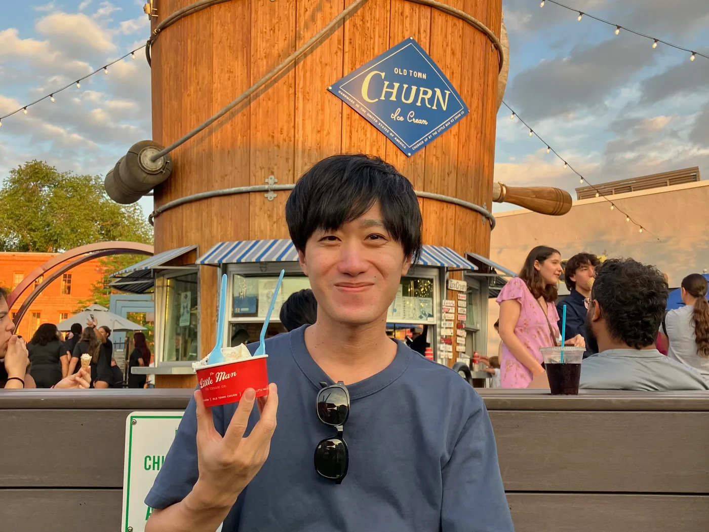
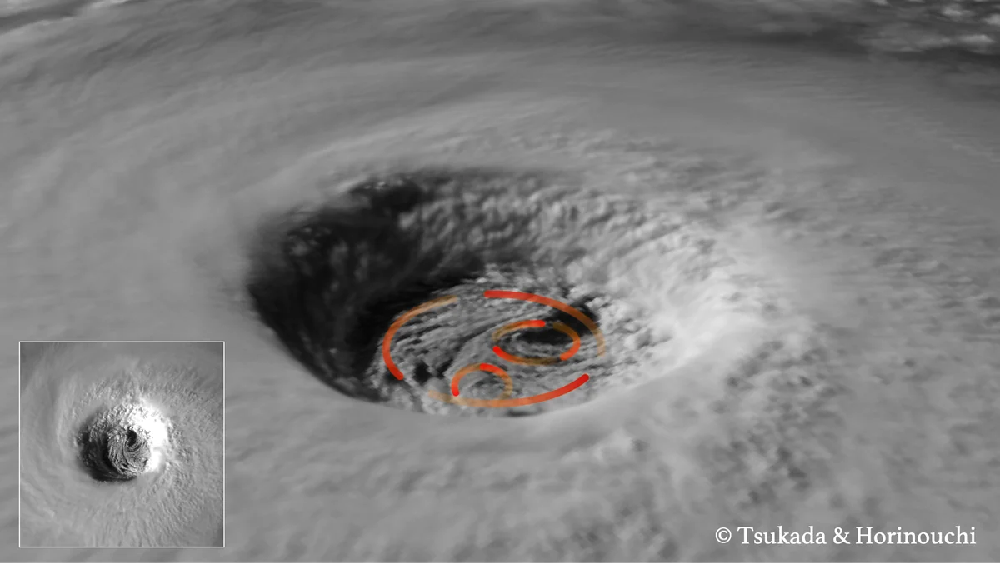

Research Scientist I
Taiga Tsukada
コロラド州立大学 大気科学共同研究所

塚田 大河
連絡先
- taiga.tsukada🍥colostate.edu
-
CIRA, CSU, Foothills Campus
1375 Campus Delivery
Fort Collins, CO 80523-1375
所属研究室
Tropical Cyclones Group
Cooperative Institute for Research in the Atmosphere
Colorado State University
研究者プロフィール
お知らせ
WMO主催の IWTC-11 に参加しました。「Topic 1.3: Observation-based analysis techniques」の Working Group にてレビューを担当しました。
全球の SAR 台風海上風データベース「CyclObs」に関する共著論文が Bulletin of the American Meteorological Society で早期公開されました。
台風セミナー2026 で講演を行いました。
北西太平洋の台風の最大風速半径の長期データセットに関する共著論文が Journal of the Meteorological Society of Japan に掲載されました。
Hurricane Dorian (2019) の最盛期の雷に関する論文が JGR: Atmospheres に掲載されました。
コロラド州立大学 大気科学共同研究所の Research Scientist I に着任しました。
日本気象学会 2025年度 山本賞を受賞しました。
自己紹介
- 主に衛星観測を用いて台風の内部構造・力学に関する研究をしています。
- 台風の心臓部とも言われる内部コア領域の理解を通じて台風の予報精度向上を目指します。
- サイエンスだけでなく、現業への応用にも資する研究を心がけています。
